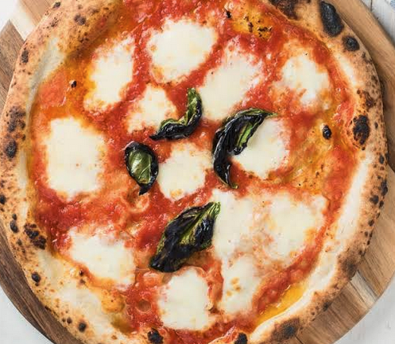

Pizza
Home

Description
An iconic Neapolitan pizza featuring a thin, blistered crust topped with vibrant crushed tomatoes, fresh mozzarella, aromatic basil leaves, and a drizzle of olive oil.
Ingredients
- 1 pre-fermented pizza dough ball (approx. 250g)
- 1/2 cup crushed San Marzano tomatoes
- 80g fresh mozzarella (Fior di Latte), sliced or torn
- A handful of fresh basil leaves
- 1 tbsp extra virgin olive oil
- A pinch of sea salt
Steps
- Crank the heat:30-45 mins.Place a pizza stone or steel on the top rack of your oven and preheat it to its absolute maximum temperature (ideally 250°C to 275°C or 500°F+).
- Shape the dough:5 mins.On a floured surface, gently press and stretch the dough ball from the center outward, leaving a 1-inch raised border around the edge. Transfer it to a lightly floured pizza peel.
- Sauce and top:2 mins.Spread the crushed tomatoes evenly across the base, leaving the border bare. Scatter the fresh mozzarella pieces over the sauce, add a few basil leaves, and drizzle with olive oil and a pinch of salt.
- Bake until blistered:5-8 mins.Slide the pizza onto the hot stone. Bake until the crust is golden-brown with dark charred spots and the cheese is melted and bubbling. Top with a few fresh basil leaves right out of the oven.